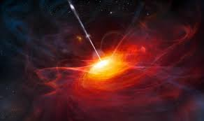
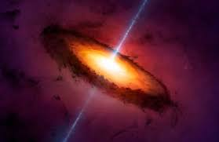

Extra: O que são QUASARES?
Quasares são buracos negros supermassivos que brilham intensamente e são os objetos mais luminosos do Universo. Eles são núcleos de galáxias distantes, alimentados por esses buracos negros.
CARACTERÍSTICAS: São formados por um buraco negro supermassivo, cercado por um disco de gás e poeira
A massa do buraco negro pode variar de milhões a bilhões de massas solares
O gás do disco é acelerado pela interação gravitacional com o buraco negro, atingindo altíssimas velocidades e temperaturas
O termo quasar significa "fonte de rádio quase estelar.
ORIGEM: Os quasares podem ser resultado da fusão de duas galáxias e da colisão de seus buracos negros
A radiação dos quasares abrange várias partes do espectro eletromagnético.
DISTÂNCIA: Os quasares estão localizados a muitos anos luz de nós
O que os astrônomos estão vendo quando os observam é algo que aconteceu há milhares de milhões de anos.

